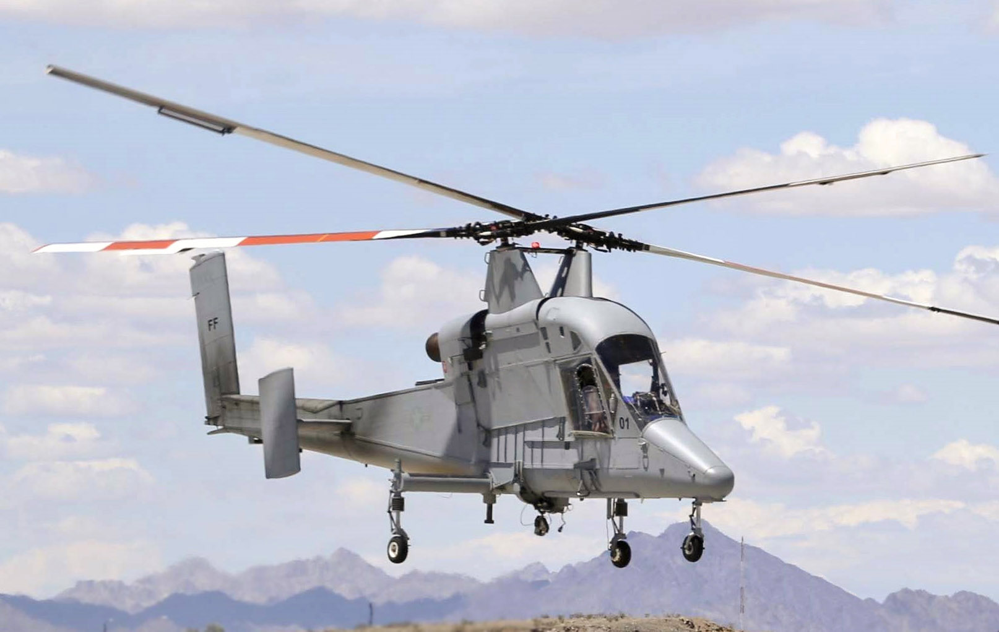
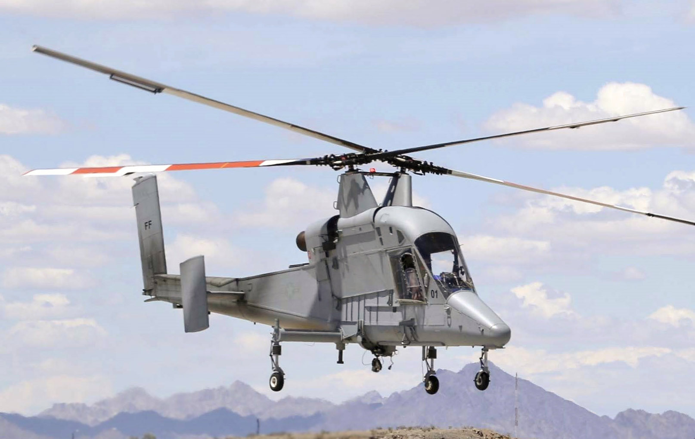

Course Overview
Contents
Course Overview¶
“If you’re in trouble anywhere in the world, an airplane can fly over and drop flowers, but a helicopter can save your life.”
Objective¶
The objective of this course is to introduce physical concepts that are relevant for understanding and analysis of rotary-wings (as helicopter rotors are also referred to) in hover, axial and edgewise flight. The course would focus predominantly on aerodynamic aspects of vertical take-off and landing (VTOL) flight. Knowledge of aerodynamics of fixed-wing aircraft doesn’t directly apply when studying rotating wings (hence the name rotary-wing). Of course, fundamental fluid dynamics concepts that govern the aerodynamics of fixed-wings also govern the aerodynamics of rotary-winged aircraft. However, as you would learn in the course, the manner in which the flow field evolves and the consitutuent flow structures are very different for the two classes of flying vehicles. Additionally, airfoil stall and unsteady aerodynamics theories are usually only briefly discussed in the context of fixed-wing aircraft but are fundamental to accurately predict rotorcraft performance and will be introduced in this course. A lot of jargon, specific to rotorcraft, will be introduced as well.
In order to study helicopter performance and dynamics one needs to be familiar with the mechanical complexity associated with the rotor structural design as well as the associated aerodynamics. While the two are intricately related we’ll just look at the aerodynamics component in this course and bring up issues related to rotor elasticity when they serve our purpose of better understanding the aerodynamics. Broadly, the following themes/topics would be covered in this course -
Momentum theory
Blade element momentum theory
Flight analysis in hover and forward flight
Compound helicopters
Modern rotor designs/active rotors
Autogyros
Unsteady Aerodynamics
Dynamic Stall
Resources
The website of the Vertical Flight Society (VFS), previously called the Amercian Helicopter Society (AHS), is a great resource of everything rotorcraft-related. You are encouraged to explore it. If there any conference papers (found under Education->Proceedings) you are interested in, then feel free to drop by and I’ll show you how it can be done - TUM is a subscriber but free download requires a few tricky clicks!
Website¶
%%html
<iframe src="https://vtol.org/" width="1200" height="1000"></iframe>
Books¶
Rotorcraft Aeromechanics by Wayne Johnson
Principles in Helicopter Aerodynamics by JG Leishman
Helicopter Aerodynamics by Ray Prouty (Vols. I, II and III)
Rotorcraft Aeromechanics
Principles in Helicopter Aerodynamics
Helicopter Aerodynamics
What makes a helicopter?¶
A number of design configurations currently exist for helicopters. The most apparent difference is the number of lifting rotors and their placement over the aircraft. This is the source of many differences in overall aircraft performance and mission capabilities among these various designs.
A number of design configurations currently exist for helicopters. The most apparent difference is the number of lifting rotors and their placement over the aircraft. This is the source of many differences in overall aircraft performance and mission capabilities among these various designs.
 

Mil Mi 6: lift-compounded [source]
Boeing V-22 Osprey: tilt-rotor [source]
Boeing CH-47 Chinook: tandem rotor [source]
Kaman K-MAX: intermeshing rotor [source]
Piasecki X-49: thrust- and lift-compounded [source]
Fairey Gyrodyne: no 'tail' rotor [source]
Autogyro [source]
Airbus X3 Racer: thrust compounded [source]
Food for Thought
A common feature among all aircraft above seems to be the presence of atleast 2 rotors. Is a one-rotor design possible? Note: We are only concerned with aircraft that have VTOL capability.
Helicopters / VTOL / STOVL¶
The central idea is to take-off and land vertically at BEST EFFICIENCY
Which of the below adhere to this principle best?
why? (hint: large rotor)
A century of research has established the conventional design to be the most efficient (for now!) – caveats (weight class, tandem rotors)
What about the performance outside this manuever (i.e. hover)?
Required power (Bucket) curve¶

Many pecularities associated with helicopters can be inferred from the required power breakdown over the operational regime. The decrease in the total power that follows immediately after the helicopter transitions from hover to forwards flight is striking. It is apparent that the highest power is consumed by a helicopter in hover and in high fast forward flight states. Of course, why that is exactly the case would be covered in detail in the following lectures. This unintuitive behavior of the power consumption by a helicopter (after all, why should a helicopter that is still with respect to the ground consume more energy per unit time that one that is moving forward and therefore has associated drag that needs to be overcome?!) leads to interesting performance characteristics. This also has critical design consequences - for e.g., ‘hot and high’ hover requirements might end up deciding the size of the engine installed because of high power requirement.
V/STOVL aircraft issues¶
Large thrust mismatch between vertical flight and cruise
either engines must be far more oversized for cruise, or that separate thrust devices are needed purely for the vertical flight
Distribution of the thrust around the center of gravity for hover
Mechanical complexity to facilitate the above
Fuel efficiency
powered lift is inherently less efficient form than aerodynamic lift
using more engines and shafts to drive more propulsors decreases efficiencies further
Wheel of (Mis)fortune¶

AHS Wheel [source]
Most V/STOVL aircraft never
entered production stageMANY engineering strategies tried
out to make helicopters go fast.
Almost all failed.Some concepts making a comeback
piston/turboshaft power
different from electric!advances in structures (this
also makes the conventional
design more lucrative)
Basically, almost any design imaginable, that was also possible with the technology level back then, was built and tested.
Aircraft balance of forces and moments¶
Forces and moments balance about CG (modified from [source])
Net force and angular momentum of the aircraft should equal zero
Vertical component of thrust = aircraft weight
Horizontal component of thrust = aircraft drag
Unbalanced moment = pitch/roll moment
Rotor aerodynamics¶
relative motion (between fluid and airfoil) necessary to generate lifting force
relative motion achieved using rotating the blades (wings)
is there a connection between airfoil efficiency and rotor efficiency?
special performance criteria for rotary-wing application?
stall performance, \(C_m\), \(L/D\) etc.
Real-world applications¶
The eventual goal would be to apply the concepts learned during the course to real world rotors (since rotors are central to helicopter performance and lifting abilities, in most scenarios a good rotor design leads to a good helicopter design 1)
What makes the below design special from the rest of the (conventional design) helicopters that the speed record set by it *still* stands - 400 km/hr?
Augusta Westland Lynx [source]
What makes the below design special that it can *easily* do ~460 km/hr?
Sikorsky–Boeing SB-1 Defiant [source]
What makes this design special that it still holds the flight altitude record of 12,442 m?

Aérospatiale SA 315B Lama [source]
What is making the concept of electric VTOLs or eVTOLs so attractive? Is it just swiping the fuel tank for a battery?
Rotors: state-of-the-art and beyond¶

Unsteady aerodynamics¶

Effect of airfoil pitching motion on aerodynamic lift [taken from Principles in Helicopter Aerodynamics by JG Leishman]

![[source]](https://en.wikipedia.org/wiki/Mil_Mi-6#/media/File:Mi-6_(cropped).jpg){kind=link}
![[source]](https://en.wikipedia.org/wiki/Bell_Boeing_V-22_Osprey#/media/File:MV-22_mcas_Miramar_2014.JPG){kind=link}
![[source]](https://en.wikipedia.org/wiki/Boeing_CH-47_Chinook#/media/File:Pinnacle_manuever.jpg){kind=link}
![[source]](https://en.wikipedia.org/wiki/Kaman_K-MAX#/media/File:Kaman_K-MAX_-_Marine_Corps_Air_Station_Yuma_(cropped).jpg){kind=link}
![[source]](https://en.wikipedia.org/wiki/Piasecki_X-49#/media/File:Piasecki_X-49-3_(cropped).jpg){kind=link}
![[source]](https://en.wikipedia.org/wiki/Fairey_FB-1_Gyrodyne#/media/File:Fairey_FB-1_Gyrodyne.jpg){kind=link}
![[source]](https://en.wikipedia.org/wiki/Autogyro#/media/File:362934-gryocopter-pilot-norman-surplus-uploaded-august-11-2015-taken-from-surplus-website.jpg){kind=link}
![[source]](https://en.wikipedia.org/wiki/SpaceX#/media/File:Falcon_Heavy_Side_Boosters_landing_on_LZ1_and_LZ2_-_2018_(25254688767).jpg){kind=link}
![[source]](https://en.wikipedia.org/wiki/Harrier_Jump_Jet#/media/File:Spanish_EAV-8B_Harrier_II+_%22Cobra%22_(27448607244)_(cropped).jpg){kind=link}
![[source]](https://en.wikipedia.org/wiki/Airbus_Helicopters_H160#/media/File:Airbus_Helicopters_H160_(cropped).jpg){kind=link}
![[source]](https://en.wikipedia.org/wiki/Sikorsky_UH-60_Black_Hawk#/media/File:Jordanian_Air_Force_UH-60_Black_Hawk_helicopter_(cropped).jpg){kind=link}
![[source]](https://en.wikipedia.org/wiki/Sikorsky%E2%80%93Boeing_SB-1_Defiant#/media/File:Sikorsky%E2%80%93Boeing_SB-1_Defiant_(cropped).jpg){kind=link}
![[source]](https://en.wikipedia.org/wiki/A%C3%A9rospatiale_SA_315B_Lama#/media/File:Aerospatiale_SA-315B_HB-XTM.jpg){kind=link}
![[source]](https://en.wikipedia.org/wiki/Airbus_CityAirbus#/media/File:Airbus_CityAirbus_D-HCIA_hovering.jpg){kind=link}
![[source]](https://en.wikipedia.org/wiki/Sikorsky_S-97_Raider#/media/File:Sikorsky_S-97_Raider_in_flight.jpg){kind=link}